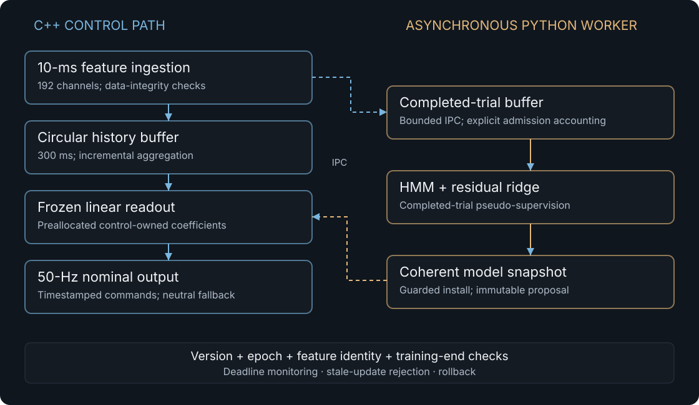

Can a brain–computer interface retain a useful decoder as its neural recordings change?
I study that question through reproducible human-data benchmarks, task-informed recalibration, and a C++/Python streaming system—with explicit tests of where adaptation fails.
Human BrainGate recordingsCausal preprocessingC++20 · Python
Direction-tuned synthetic features and a population-vector readout. No participant data, trained StableBCI model, or raw voltage is shown. The reference cursor is fixed; this is not an interactive-control validation or a browser latency benchmark.
Research status: manuscript in preparation. Retrospective T5/T11 algorithm evaluation and C++ software replay are complete; runtime qualification remains open. Autonomous human closed-loop stabilization has not been established.
120held-out T11 sessions
69.38° → 32.25°median directional error, frozen to R
192source channels retained
1 hourmeasured Windows x64 replay
The research question
Useful information can remain. The recorded mapping can change.
A decoder can perform well within one session and transfer poorly to another. StableBCI separates the information available in a recording from the ability to recover its mapping without instructed target labels.
Reproducible neural-data engineering
Audited public BrainGate recordings from T3, T5 and T11: channel identity, timestamps, block boundaries, movement-attempt indexing, cursor resets and coordinate conventions. T3 served as a negative benchmark; T5 supported development and T11 independent-participant evaluation.
Indexing and provenance before model fitting
Partition-isolated decoding
Compared linear decoding, supervised recalibration, aligned factor analysis and a compact recurrent dynamics baseline. Preprocessing, reaction-time choices and model selection respect the declared held-out partitions. Temporal states reset at discontinuities.
Within-day, held-out-block and cross-session controls
Probabilistic target inference
A task model uses permitted cursor feedback and source-derived candidate geometry to infer likely targets. Completed-trial inference supplies soft directional pseudo-labels for later updates; it cannot revise commands already issued.
Task-informed adaptation, not neural-only alignment
Direction-aware reliability
A source-trained estimator weights pseudo-supervision using observable posterior and feedback diagnostics. The neural decoder is participant-specific; a fixed T5-trained reliability estimator is separately evaluated unchanged on T11.
Transfer the reliability estimator, not the neural decoder
A behavioral proxy, with explicit limits
The target-directed unit vector changes with cursor position. It is a useful behavioral proxy—not a direct measurement of motor intention. Regularized residual regression updates the source decoder using inferred, rather than instructed, directions.
The central distinction
A latent representation can contain directional information while its unlabeled orientation remains poorly identified. Strong retrospective recovery with task feedback is encouraging, but historical cursor trajectories were produced by the original controller—not by StableBCI.
Causal feature history. Source-only channel normalization and a trailing 300-ms neural window. Histories never cross declared discontinuities; the 192-channel representation preserves both arrays.
Measured retrospective evidence
Independent-participant validation, with the algorithm frozen.
T5 informed development. Earlier T11 sessions trained a T11-specific source decoder; 120 eligible, chronologically later T11 sessions tested the calibration algorithm.
Calibration efficiency on T11
Measured
Median angular error across 120 eligible target sessions; 100 raw chronological calibration trials. Identical later post-100-trial evaluation rows across methods and budgets. Lower is better.
A transferable reliability estimate
Uniform posterior-mean recalibration is the primary comparator (StableBCI-U). Learned directional reliability is the candidate improvement (StableBCI-R). RT5 keeps the T5 reliability regressor unchanged while using the T11 neural decoder.
−2.19°paired equal-session mean, R minus U
32.30°median with transferred T5 reliability
At 100 trials: 95% session-bootstrap interval for R minus U [−2.73°, −1.70°]. This paired mean difference is distinct from subtracting cohort medians. Repeated sessions within one participant are temporally dependent.
66 earlier T11 source sessions; 130 later target sessions, of which 120 met the frozen scoring requirements.
R harmed 5/120 sessions relative to frozen decoding. Transfer does not eliminate adverse outcomes.
Systematic 90° feedback rotation harmed R in 95/120 sessions. Directional reliability is not a validated safety gate.
See the measured 100-trial comparison as a table
Common T11 evaluation population, 120 sessions
Method
Median error
Worst session
Harmed vs frozen
Frozen source decoder
69.38°
115.85°
Reference
Uniform (U)
34.61°
81.67°
8/120
Learned reliability (R)
32.25°
75.92°
5/120
Transferred T5 reliability
32.30°
74.79°
4/120
Matched supervised reference
32.10°
83.41°
7/120
The supervised condition uses explicitly budgeted instructed labels. It is an empirical reference, not a theoretical performance ceiling. U and R do not receive those labels during adaptation.
Interactive reliability lab
Certain about a grid location? That is not the same as direction.
A posterior can spread across nearby targets while agreeing on their direction. It can also be concentrated and wrong. Adjust the toy posterior to see both cases.
Candidate-target posterior
Synthetic toy
Posterior-mean directionToy reference
Direction-specific uncertainty
The posterior-mean vector averages candidate directions. Its magnitude measures model-implied directional concentration. It does not guarantee agreement with the actual instructed direction.
Exact-target confidence, qmax²
Directional concentration, r
Toy angular error:
Try a 90° feedback rotation.
Concentration can stay high even when the direction is wrong. This illustrates the failure of confidence alone to certify adaptation.
This lab visualizes a mathematical diagnostic, not the trained StableBCI-R estimator. The toy reference is available only to explain error; instructed target identities are not inputs to the research adaptation procedure. Directional concentration alone performed approximately like uniform weighting in development.
Systems engineering
Fast inference. A separate adaptation-delivery challenge.
The C++20 control path ingests 192-channel features, incrementally aggregates a 300-ms causal history, and schedules nominal 50-Hz outputs. Python recalibration runs outside that path.

Implemented software architecture (scroll the diagram on narrow screens). Control inference does not call Python, wait on sockets, or write files. SPSC publication transfers complete snapshots; the control thread owns active coefficients, checks training endpoints and versions, and retains rollback snapshots.
Measured · one-hour replay
Windows x64, ordinary Normal priority
Scheduled command releases
180,000
Issued commands
179,268
Processing latency p99
9.3 µs
Logical output latency p99
3.091 ms
Maximum logical output latency
9.994 ms
Skipped releases / deadline misses
732 / 0.407%
Ordinary control-thread C++ allocations
0
Maximum NumPy prediction difference
4.27 × 10⁻¹⁵
All issued commands met 20 ms; skipped releases remain counted as misses. Logical output ends immediately before output-queue publication. It excludes physical neural acquisition, raw-voltage feature extraction, implant/actuator transport, and prospective human control.
A completed hour is not continuous adaptation
The worker stayed alive, but only 121 of 727 observed completed attempts reached it. Reconstructing the saved trace attributed all 606 rejections to completion-time epoch mismatch, with zero pool or queue-capacity rejection in that hour.
121 delivered · 16.6%606 epoch-rejected · 83.4%
The two installed updates used 5 trials / 94 windows and 10 cumulative trials / 174 windows. The last installation was at 54.78 s. A separate bounded RPC test handled 300 full-length recorded trials at 10 trials/s and produced 15 expected prefix fits.
Current engineering finding
Scheduler gaps reset the calibration epoch and starved trial admission. Worker throughput was not the measured bottleneck. Decoupling command deadlines from trial collection remains a proposed repair; runtime qualification is open.
Unit/integration tests and AddressSanitizer passed; an independent rebuild was byte-identical. Windows scheduling is soft real-time. The current updater uses 5/10/25/50/100-trial prefix fits, not rolling continual recalibration.
Interactive systems lab
A small gap can invalidate a much larger trial.
Explore a simplified admission model. The same seeded input gaps are used for both policies; this is a structural illustration, not a replay of the measured hour.
Completed-trial admission toy
Hypothesis explorer
Each toy trial lasts 5 simulated seconds. A four-place waiting queue bounds toy admission; capture and worker slots are separate. A slower worker can create backpressure; frequent gaps can invalidate trials even with a fast worker.
The alternative preserves raw-attempt identities while excluding incomplete observations from fitting. This is an unvalidated design hypothesis, not an implemented or verified runtime repair.
Toy “update opportunities” mean a prefix budget was reached with at least two usable trials. No HMM, neural decoder or behavioral outcome is fitted here.
—Delivered to worker
—Admission rejections
—Input-history resets
—Toy update opportunities
Run the toy to inspect delivery and prefix handling.
Research programme and technical contributions
From audited recordings to explicit failure mechanisms.
Data and signal quality
T3 negative benchmark; T5 preprocessing and directional positive controls. Explicit masks, array correspondence and provenance established before decoding.
Longitudinal instability
Within-session, pooled and source-to-source transfer controls separated information availability from source-mapping generalization. Recalibration budgets quantified recoverability.
Latent alignment
Aligned FA helped some sessions but left adverse tails. Supervised orientation exposed an identification bottleneck. The tested compact Gaussian recurrent model did not improve stabilization.
A frozen protocol tested 120 later T11 sessions, including the unchanged T5 reliability estimator. The validation transfers an algorithm and reliability model, not a neural decoder between people.
Streaming and diagnosis
Preallocated C++ inference, incremental aggregation, explicit Python IPC, coherent snapshots, stale-update rejection, rollback, fault injection, sanitizers and command-level timing audits.
What the project does not establish
Human autonomous closed-loop stabilization; direct reconstruction of motor intention; clinical significance of the retrospective angular-error improvements; a validated harmful-adaptation detector; a hard real-time deadline guarantee; or a successful replication of NoMAD. The compact recurrent baseline is a separately implemented, materially different model. Historical cursor feedback remains a central limitation.
What comes next
Repair the scheduler/collection/epoch coupling under a frozen diagnostic protocol, preserve invalid-trial identities and causal boundaries, and repeat the endurance test. Interactive simulation must first establish nominal controllability before adaptive-control claims. No additional architecture is needed to explain the present runtime failure.
Methods and prior-art context
HMM target inference and confidence-weighted recalibration build on PRI-T; confidence weighting was already known to be condition-dependent. Aligned factor analysis and dynamics-constrained stabilization are established baselines. The candidate contribution here is transferable source-calibrated directional reliability and its controlled longitudinal evaluation—not inventing target inference or demonstrating deployment safety.
Data, context and reproducibility
Research you can inspect.
The page publishes aggregate research outcomes and synthetic educational models. It contains no participant feature recordings, individual cursor trajectories, or fitted clinical decoder weights. The browser source is separate from the Python/C++ research runtime.
Research and software by Atin Srivastava. BrainGate recordings were collected and released by the original investigators. Manuscript in preparation; no publication or clinical deployment is claimed.